釣行日誌 故郷編
2016/09/02～04 長岡技術科学大学 釣り同好会 ＯＢ会釣行
湖畔の夕まづめ
９月２日、有給休暇を取った金曜日の朝が来た。朝食を食べてからベッドの上に釣行用防水バッグを載せ、持ち物リストに基づいてチェックしながら荷物を詰めてゆく。これで忘れ物は無い。
約束の10時より40分も早く、紀（きの）先輩が迎えに来てくれたので、デイパック、防水バッグ、ロッドケースを持って駐車場へ行く。エンジ色のベンツに乗って、いざ新潟県奥只見は銀山平までの約520kmのドライブが始まる。今週末は、長岡技術科学大学の釣り同好会のＯＢ会が釣り宿、荒沢ヒュッテで開かれるのだ。
今回のＯＢ会は、今年の２月頃から話が始まり、同期の岡田君が幹事役となって、宿泊場所、宴会の時間、２次会の段取り、そして何よりＯＢ釣行の具体的なプランを、約10名ほどのＯＢ達が今日まで相談を重ねて練り上げてきた。ＯＢの皆さん、顧問だった丸山先生も含め、何百通ものメール、メッセージが飛び交い、ようやく最終的な計画が決まったのは、先週のことだった。神戸からは徳田先輩、京都からは宮田先輩、愛知からは紀先輩と伊藤、山梨から中島先輩、富士から谷倉先輩、長岡から丸山先生と坂田先輩、東京から山口先輩と岡田君、という顔ぶれである。卒業以来30数年ぶりに再会するというメンバーもいて、実に楽しみなＯＢ会になったのである。
９時25分に自宅を出て、豊川ＩＣ、東名、新東名、東名、圏央道、関越自動車道を経由して小出ＩＣで高速を降りてコンビニに寄る。天気予報では暑くなるらしい明日の釣行時の水分補給に、ポカリスエットの500mlを４本と、非常食にカロリーメイト３箱とアーモンドチョコレートを買い込む。国道352号線を通り懐かしいシルバーラインへ。
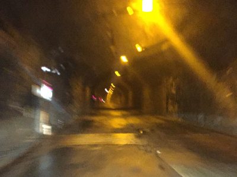
学生時代には、残雪から紅葉まで、釣りシーズンを通して先輩方の車で通った狭くて急勾配のトンネルを幾つも過ぎて、銀山平に着いたのは４時45分頃だった。昔と比べてずいぶん立派になった観光遊覧船の船着き場の駐車場に車を止めて、案内看板の前で記念撮影をし、夕間詰めの下見をしてから荒沢ヒュッテに着いたのが夕方５時だった。昔は銀山湖の湖畔近くに立っていた荒沢ヒュッテは、16年ほど前に北ノ岐川の上流に移転し、舗装された林道の１番奥に建っていた。本館の前には４棟のログハウス造りのロッジがある。玄関を入り、さっそく御主人の佐藤幸一さんとおかみさんに挨拶をして、入漁券を買い、ロッジに荷物を置くとすぐにバックウォーターの夕まづめ狙いに出かけた。紀先輩は釣り道具を持ってきていないので、今日は運転主役である。感謝。
駐車場に車を停め、ずっしり重いフィッシングベストを着て、ロッドにリールをセットし、老眼に苦しみながら金色のスプーン12gを結び終えて銀山湖の湖面を見下ろすと、いきなり60cm級の黒い魚影が見える。鯉だ。（笑） また、30匹ほどのヘラブナの群れも右往左往している。狙いは別として、魚影は濃い。北ノ岐川の流れ込みを見ると、ルアーマンが１人キャストをしている。
「あれま！先客が....」
と思ったが、まぁ何とかなるだろうと、湖畔に降りて行く。水辺に着いた頃には先ほどのルアーマンの姿は無く、いざ流れ込みへ！と歩みを進めると、草むらに隠れて見えなかったが、ダム湖の水位が上昇して、一面水が漬いている。これはスニーカーではなんともならない。ズボラを決めこんで、暗くなるまでのちょっとの間だからと普通の靴で来たのが失敗だった。しょうがないので流れ込みへ行くのはあきらめて、少し下がった足場の良い場所で釣り始める。スプーンが放物線を描いて沖へ飛んでいき、着水する。そんなに深くはなさそうだったので、カウント５つでリーリングを始める。さあ、何か来ないか？イワナでもサクラマスでも、レインボーでも何でも良いのだが.....。
岸沿いの水面には、流木が何本か浮いていて、ルアーが引っ掛かりそうだったので、コースを限定し、注意しながらキャスティングを繰り返す。正面の方向に10回ほど投げたあとで、少し上流側に狙いを移してキャストする。５つ沈めてからアクションを付けて引き出すと、コクンッとアタリがあった。
「！！」
すかさずロッドを立てて合わせると、ブルブルという手応え。
「おっ！何か来た来た！」
と思った瞬間、手応えはスプーンのウォブリングのみになり、バレてしまった。うーん、そんなに大きく無かったけど、ウグイかなぁ？と一人で残念がる。まぁ、何も無いよりはいいので、さらにキャスティングを続ける。すると、目の前を先ほどの大鯉が２匹、悠々と泳いでいく。もしあれが喰いついたら、６ポンドのラインでは厳しいかもしれないなどと夢想する。
遠く上流側に、朽ちた立木が一本見える。「川岸に立つ一本の杭となれ」という開高健氏の名言が思い出される。はるか昔にあの小説家も釣りをした有名なこの銀山湖で、今、自分もルアーを投げていることに、しばし感慨にふけった。
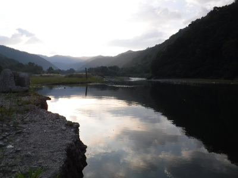
ふと、人の気配を感じて振り返ると、紀先輩が駐車場下の階段護岸から草むらを抜けて水辺まで見に来ていた。
「釣れませ～ん！」
と手を振り、再び釣りを続ける。気が付くと、遠くの峰々の間に日は落ち、あたりはしだいに薄暗くなってきた。
「紀センパ～イ！、暗くなると帰りがわからなくなるから、今のうちに戻った方がいいですよぉ！」
と、声を掛けると、紀先輩は振り返って草むらをかき分けながら駐車場へ戻っていった。
釣り始めて１時間、あれからアタリは無い。フナの群れは相変わらず目の前を右往左往している。時折スプーンに反応しかける奴もいるが、ほとんどのフナは、スプーンが近づくとササッと逃げて行く。
右側に投げてまた５つ沈め、ゆっくりと引いてくる。ロッドがふいに重くなり、スプーンが動かなくなる。根掛かりだ。（笑） 泣く泣く切れるまで引っ張り、頼りなくなったラインを巻き取って、次のスプーンを結ぶ。今度は銀色のウィローリーフだ。地球を釣って無くしたコンデックスに比べて空気抵抗が小さいのでよく飛ぶ。沖ででかいのが掛からないかなぁと期待が高まる。しかし、それから30分粘ってもターゲットの気配は無いので、あまり遅くならないうちに宿へ帰ることにして、最後のポイントである沢の流れ込みを狙う。玉石の沈んだ辺りを狙って銀色のスプーンを打ち込み、ヒラヒラと引いてくるが反応はない。３投して何も起こらなかったので、今日の夕まづめ狙いは終了とし、駐車場へと戻る。６時40分であった。待っていてくれた紀先輩と荒沢ヒュッテに車を走らせた。
ロッジには明かりが点いており、到着していた谷倉先輩と宮田先輩が出迎えてくれた。紀先輩とお二方は初対面だったので、やぁやぁと挨拶を交わす。２人とも年齢相応の重厚感が出てはいるが、笑顔は学生時代のままである。僕は２人とは Facebook で日頃から交流があるので、全然久しぶりという感じはしない。バックウォーターの夕まづめ狙いはダメでしたと報告し、風呂に行くことになった。ロッジからすぐ近くにある銀山平温泉「白銀の湯」（しろがねのゆ）である。夜７時までに受付を済ませば良いとのことだったので、４人でブラブラと歩いて温泉に向かう。９月上旬とはいえ、銀山平はかなり涼しく、Ｔシャツに風が心地よかった。
「白銀の湯」の受付に荒沢ヒュッテでもらったチケットを出し、２階の浴場に向かう。石造りの浴槽は広く、長旅の疲れを癒してくれた。４人で久しぶりの思い出話に花が咲いた。だいぶ暖まったので、露天風呂に出て満天の星空を眺めた。夏の大三角と北斗七星がくっきりと見えた。谷倉先輩は、スマホにインストールしてあるお気に入りの星座観察アプリのことを説明してくれた。方位や角度に反応して、今スマホをかざしている方向にどんな星座が見えるのか、画面に出てくるのだそうだ。
露天風呂は２つあり、小さい方が源泉の風呂であった。湯加減はぬるめ、大きさは４人でちょうど良いサイズであった。明日はルアーフィッシングに挑戦するという宮田先輩は、新婚旅行でニュージーランドに行き、レンタカーで南島をぐるりと周り、ルアーでレインボートラウトを釣り上げたことを話してくれた。しかし、日本では魚種に関わらず１匹もルアーでは釣った経験が無いそうで、明日の釣りに一抹の不安を抱えているようであった。同じく新婚旅行でＮＺに行った谷倉先輩も、懐かしそうに思い出を語っていた。宮田先輩の時には、奥様の方が大きい鱒を釣り上げたそうで、一同笑った。温泉の帰り道、天空を駆ける天の川を４人で眺めながら、夜道をロッジに戻った。
夜８時となり、荒沢ヒュッテの食堂に向かった。食堂は畳敷きの大広間で、一角に囲炉裏があり、熊の黒い毛皮が敷いてある。囲炉裏のそばには徳田先輩と中島先輩が先立って発送しておいたトローリング用の釣り道具が詰まった大きなバッグが２つ置いてあった。食堂の壁には、御主人自慢のルアーのコレクションがあり、大型プラグから各種スプーンまで、何百ものルアーがショーケースに飾ってある。ケースの中には、開高健氏の色紙もあり、「釣りの話をするときには、両手を縛っておけ」というロシアの古諺が、訪れる釣り客の苦笑いを誘っている。
いよいよ最初の晩餐が始まった。魚野川で釣り上げられた天然アユの塩焼き、ふきのとうの和え物、各種キノコ、刺身、焼き肉、酢の物、キムチ、ナスの煮付け、そして何より生ビール！皆で乾杯をして、料理に舌鼓を打つ。思い出話に会話が弾み、箸は止まらない。
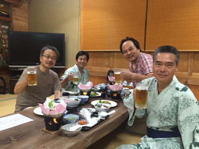
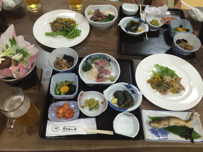
盛り上がった宴の話の中で特に面白かったのは、谷倉先輩のミミズの話である。今日、午前中勤務して、昼過ぎに富士市を出発した谷倉先輩は、エサのミミズを買うのを忘れてしまい、まだ勤務中の岡田君と徳田先輩に
「小出からシルバーラインまでに釣具屋があるかどうかわかりますか？」
というフェイスブックのメッセージをスマホから送ったそうだ。岡田君からは、速攻で調べた情報：
「小出駅方面に、ヒロセヤ釣具店というのがあるようです。0257920945ミミズはあるかな？」「風間釣具店というのが352号線沿いにあるようです。0257921737」
という返信が返ってきた。そこで２人は、小出ＩＣを降りたのち、情報に基づいて某釣り具店に行き、箱入りミミズを買おうとしたのだが、谷倉先輩が中身をチェックすると、糸のように細い貧弱なミミズが数匹袋に入っているだけ。谷倉先輩は店の主人にクレームを付け、こんなのは買えないと、店を出てきてしまったそうだ。
「徳田さん、岡田さん、どちらか大きめのミミズ一箱買ってきてくれないか？こちらの釣具店はどこもダメ！糸ミミズが数匹しか入ってない箱を売りつけるし、他は休みや遠方。(^^;; 無理しなくて良いよ。これから宮田とドバミミズ掘る！(^^;;」（谷倉さんのメッセージ）
「さすが名人は餌から掘る。掘る。掘る。日が暮れてきた。夕まずめに掘る。」
「なかなか帰ってこない！大量かなあ？！」（宮田先輩のメッセージ）
「夜はミミズで宴会？取り敢えず太めを買って行きます」（岡田君のメッセージ）
「これから出掛けます。申し訳ないですが、ミミズは買いませんでした。(新幹線の荷物棚から逃げ出したミミズが落ちてくる光景！)(笑)」（徳田先輩のメッセージ）
ということで、国道352号線沿いの、とある畑の横に車を停め、谷倉先輩は夕暮れまで手でドバミミズを掘ってから宿まで来たと云う次第。と、ここで、晩餐のさなかに、仕事帰りの岡田君から、東京の釣り具店で買い込んだ太ミミズの写真が送られてきて、スマホでそれを見せていただいた。確かに太くてジューシーな良いミミズがビニール袋に入っている。これなら安心とホッとした谷倉先輩であった。
明日の釣行予定は、谷倉先輩、金曜の仕事を終えて徹夜で高速を飛ばして明朝未明に合流予定の岡田君、そして伊藤が渓流に入り、同じく徹夜組の山口先輩、中島先輩、徳田先輩、そして宮田先輩が船二艘に別れてトローリングとキャスティングを行い、紀先輩は釣りは行わず、長岡市の知人宅に挨拶に行ってくるとのこと。長岡市から参加する丸山先生と坂田先輩は、土曜日の午後、銀山平へ来る途中の渓流に挑戦することとなっている。
夜９時頃、宴たけなわの食堂に、仕事が片付いた御主人とおかみさんが顔を出してくれた。温泉を掘った話、湖畔からの移転の話、数年前の水害の話、ゼンマイ採りの後継者が居ない話、などなど、四方山話を懐かしく面白く語っていただいた。おかみさんには明日の朝食と昼食の分のおにぎりを３人分、頼んでおいた。
すると、宮田先輩が御主人に、
「この中のルアーでは、どれが良く釣れるんですか？」
と、ショーケースを指さして尋ねた。すると谷倉先輩が、
「あそこの赤白のスプーンだよ」
と答えた。谷倉さんはそれと同じルアーで、大岩魚を釣ったことがあると話してくれた。御主人は、
「ああ、それはダンサーというダイワのスプーンで、今はもう生産中止なんだよねぇ」
と、残念そうに答えた。宮田さんは、
「このケースのルアーは、売り物ではないんですか？」
とさらに聞く。御主人は、
「ケースのルアーは売り物ではないけど、ロビーにあるやつは売ってるよ」
と答えた。あとで見てもらうことにして、宮田さんは、日本酒を注文した。「岩魚の宿」という地酒である。紀さんと僕も、その日本酒をおいしく頂いた。30年ぶりの新潟の酒であった。最後に御飯と味噌汁をいただき、食堂を出た４人は、ロビーにある売り物のルアーを見ながら、御主人にレクチャーしてもらった。御主人が宮田さんに勧めてくれたのは、あの常見忠さんのブランドのスプーンで、この時期には効くという緑色のルアーだった。宮田さんは、同じ系統のもう１つと合わせて２ヶのスプーンを買い込み、今度は広い銀山湖のどこで釣ればいいのかと、さらに尋ねた。御主人は、
「今の時期ならここだね」
と、地図の１点を指さした。そこは数ある岬のうちの１つで、湖底までスプーンを沈めてから引いてくると、大物が釣れるのだという。４人はなるほどと頷き、期待を胸に、ほろ酔い加減でロッジに戻った。
布団に入る前に、明日の支度をしておこうと、紀さんを除く３人は、釣り道具を取り出して準備を始める。谷倉さんのフィッシングベストは、学生時代からのもので、相当な年代物である。何と言っても釣り同好会特製のワッペンと、「奥只見の魚を育てる会」の亀マークのワッペンが付いているのだ。それを見た時、僕はほのぼのと嬉しく、懐かしい気持ちになった。
続いて僕は、明日キャスティングで勝負をかける宮田さんに、ひとケース分のスプーン、スピナーのセットを使ってくださいと手渡した。宮田さんが中を見てみると、ダイワのダンサー赤白が偶然入っていた。
「根掛かりでなくしてもいいですよ」
といって、武運を祈った。谷倉さんも、明日宮田さんに使ってもらう年季の入った振り出し式のルアーロッドとリールを取り出してきた。ところが、トップガイドが緩んでいて、スポッと抜けてしまった。
「伊藤、瞬間接着剤持ってないか？」
「いやぁ、瞬間はさすがに持っていないですねぇ」
そこで、ヒュッテの御主人なら瞬間接着剤を持っているだろうと、谷倉さんと宮田さんは再び荒沢ヒュッテ本館に向かった。20分ほどして帰ってきたお二方に話を伺うと、トップガイドの再接着はうまくいかず、ロッド先端を切って少し詰めて、第２ガイドをトップガイドにするという荒療治を施したとのこと。これで明日の支度は万全と、皆ふかふかの布団に入った。僕も処方の薬を飲んで床についた。明日の朝は、４時前には東京から４人の徹夜組が岡田君の車で来て合流し、ひさびさのＯＢ釣行を楽しむのだ。
源流へ
翌朝、車の音と人の話し声で目が覚めると、ちょうど４時である。床を出て浴衣姿のままヒュッテの本館に行くと、徹夜組の４人が到着しており、いつもこの時間には起きて仕事を始めるという早起きの御主人から、徳田さん、中島さんが荷物を受け取っていた。
「まだ浴衣着ておるんか？！」
と、テンションの上がった岡田君が僕に問いかける。慌ててロッジに戻り、谷倉さんと宮田さんを起こして身支度を始める。まだ夜明け前の暗い中、渓流組の谷倉さん、岡田君、伊藤が谷倉さんの車に乗り、トローリング・キャスティング組の山口さん、宮田さん、徳田さん、中島さんが岡田君の車に乗り込んで釣り場を目指した。谷倉さんの運転で、僕が助手席に座り、岡田君は後ろに座って目的の釣り場までドライブが始まる。再びシルバーラインを抜け、高速に乗り、坂田先輩のお薦めの川へと向かう。坂田さんの最新情報では、数年前の水害からかなり回復しており、一昨年の夏には良型がよく釣れたという谷である。
今回のＯＢ会釣行で、僕たちが最も悩んだのが、この渓流組の目的地であった。ある川は数年前の大水害で林道が寸断されているとか、ある川は谷が土砂で埋まってしまったとか、水害の影響が色濃く残っているという情報が多かった。また、去る２月に大病をした谷倉さんの体調のこともあり、あまり無理はできないということもあった。たくさんのメールのやりとりから、最終的に坂田さんの情報が決め手となって、今日の渓が選ばれたのであった。その川は、いわば我が釣り同好会のホームグラウンドとも言える川であり、メンバーのほとんどが在学中はもとより、卒業後も足繁く通って釣りやキャンプを楽しんだ川なのである。僕もとても良い想い出がたくさんある良い川である。１つだけ難点があるとすれば、谷沿いの林道は一般車両の通行が禁じられているため、良いポイントのある区間まで、延々と歩かなければならないということだ。
途中、谷倉さんは何の変哲もない小さな沢が流れ出しているカーブに車を停め、おもむろにロッドをトランクから取り出して伸ばし始めた。
「ここが釣れるんだよ...」
ガードロープ越しに、我が釣り同好会伝統の仕掛けをするすると擁壁下の小さな淵に降ろし、ミミズが投入された。流すこと数回、やおら谷倉さんがロッドをあおると、はるか下から可愛いイワナが水面を割って現れた。
「やりましたねぇ！」
「釣れた釣れた！」
谷倉さんはそのイワナをそっと沢の上流に放してやった。岡田君と僕は、こんな沢の落ち込みを狙って見事にイワナを釣り上げるという谷倉さんの目の付け所の鋭さに、感動の言葉を発した。さらに続けて流すと明確なアタリがあり、今度はウグイが上がってきた。この人には本当にかなわないなぁと、僕は心から思った。今日の１匹目は、名もない沢でのリリースサイズのイワナだった。もうここではこんなもんだろうと、３人は再び車で走り出した。
すっかり明るくなり、ゲート脇の空き地に着いたのは、朝６時前だった。いざトランクを開け、身支度が始まる。谷倉さんは渓流足袋、ウールの長靴下に登山用のニッカズボンという足回りである。岡田君は、キャラバンのラバー底新型ウェーディングシューズに、ネオプレンのゲートル、リバレイのウェーディング用ズボンである。皆ベテランなので、夏の釣りの支度が上手い。
僕はいつものキウィスタイルに、もう６年も使っているやはりキャラバンの旧型ウェーディングシューズを履いた。帽子は暑くなりそうだったので、いつもの緑色のコロンビアをやめて、白いタオルハットにした。少々目立つが、新潟のイワナは、ニュージーランド南島西海岸のブラウントラウトほど神経質では無いだろうと思ったからだ。暑苦しいウェーダーを履かなくても爽快に歩ける夏の釣りは最高である。
身支度が整ったところで谷倉さんが、トランクから秘密兵器を取り出した。今回の渓流釣行の目玉でもある折りたたみ式電動アシストバイクである。目的地の選定に加え、谷倉さんが一番逡巡したのがこの自転車の購入なのだった。テキパキと組み立てて、キーを差し込み、いざスイッチオン！ ところが電動バイクは起動しない。
「あれぇ？ おかしいなあ？」
ハンドルに付いているスイッチを何度いじってみても、バッテリーを動かしてみても、キーをひねり直してみてもうんともすんとも言わない。自転車に詳しい岡田君が見ても状況は変わらない。
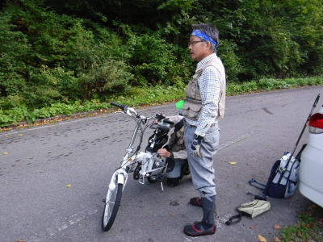
「谷倉さん、どうします？ 置いていきますか？」
「いや、押していく。帰りは楽ちんだ。」
ということで、バッテリーという重しの付いた折りたたみ式電動自転車（笑）を押して、谷倉さんと僕たちの林道歩きが始まった。時刻は６時６分。ゲート右側の隙間から自転車を抱え込み、秋の気配が漂い始めた渓谷沿いの林道を３人で黙々と歩いて行く。入渓予定点は、約８km先である。
今日の天気は快晴。雲１つ無い９月上旬の青空が頭上に広がっている。30年前の学生時代と思うと、想像もつかないほどよく整備され、所々舗装されている林道を歩く。変わったものはまだある。私の体型だ。22歳の時点では72kgだった体重は、中年太りで84.5kgにまで増えてしまった。お腹は見苦しく張り出している。約1.6kgのルアー用ベストを着込み、雨具・非常食・リール・ポカリスエット２リットル、保冷剤、朝と昼のお弁当などを詰め込み、およそ5kgほどに膨らんだデイパックを背負うと、ずっしりと重い。膝に負担が掛かる。日頃の運動不足も加わり、かなりの強行軍となった。
東の峰の上に太陽が顔を出した。眼下の流れが陽光に輝く。ススキの穂が白く揺れている。これからの釣りを思うと、重い荷物を背負っていても、自然と脚が早まる。デイパックに付けた熊避けの鈴が、いまいち心もとない音量で、チロリンチロリンとリズム良く鳴っている。ここら辺りは、熊猟師にとっても良い猟場なのだ。
林道のはるか下に、大きな滝壺が見えた。あそこは大学時代に宮田さんと訪れ、大イワナのジャンプを目撃した滝なのだ。季節はやはり９月だったように思う。盛んにジャンプを繰り返すイワナの姿を見て、２人とも大いに興奮させられた。しかしその日の僕はテンカラ釣りであり、滝壺の底深くで体力を回復させているであろうイワナを攻めるには不得手であった。そこで宮田さんがエサ釣りで粘り、とうとう37cmと35cmを連続で釣り上げたのだった。撮影時に大イワナを抱える宮田さんの手が震えていたことを、昨日のことのように鮮やかに思い出した。
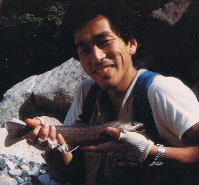
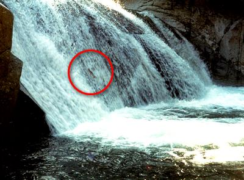
ふと、林道脇の草むらに青い輝きが見えた。アゲハチョウである。３人は童心に帰って、ここからあそこへとひらひらと舞い飛ぶアゲハを追いかけ、デジカメやスマホに写真を撮した。
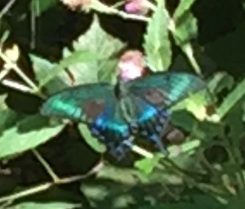
時刻は７時を回った。ここらへんで朝食にしようということになり、みんなで沢の出口に腰を下ろし、お弁当を広げた。谷倉さんと僕は、荒沢ヒュッテのおかみさんの手作りおにぎり弁当である。岡田君は来る途中のコンビニで買った弁当であった。沢の水の音が心地よく、山の朝の風は気持ち良く、おにぎりが美味い。食後、ベストの背中のポケットから防水ケースに入れた国土地理院発行の1/25000地形図を取り出す。今は日本地図センターのウェブサイトから通信販売で入手することができるようになった。最近発行された地形図は、昔のものより色合いが鮮やかになっていて見やすい。現在位置を確認してみると、目指す入渓点はまだまだ先のようだった。最近は、スマホのGPS機能を利用して、電波の届かない所でも山岳地図を見ることのできるアプリがあるそうだから、次回来るときには谷倉さんの iPhone で活用してもらおうと思った。
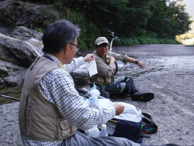
朝食を済ませ、再び歩き出した一行は、急な上り坂や悪路の区間に苦しみながらも、着々と距離を伸ばしていった。すると岡田君が、谷倉さんが押している自転車から、キーキーという異音がしていることを指摘した。見てみると、前ブレーキの調整が悪く、ブレーキパッドがリムに当たっていることがわかった。谷倉さんがリュックから工具を取り出し、岡田君が器用に調整しなおした。これで大丈夫。そこで谷倉さんは重いリュックを自転車のハンドルに掛けて、身軽になって自転車を押した。
渓谷に沿って作られた林道は、谷ごとに大きく切れ込んでカーブをしている。１つの曲がりを越すと、次の曲がりが現れる。目指す沢の出会いはこのカーブの向こうか？、次のカーブの向こうか？ 黙々とひたすら歩いた３人は、８時50分に入渓予定点までたどり着いた。
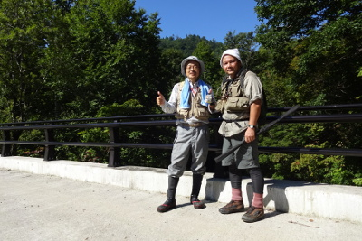
谷倉さんは繁みに自転車を入れ、空き地で釣り支度を整える。岡田君と僕も準備を始める。
「あっ！ フライリールを忘れた！」
岡田君が声を上げる。自分の車から谷倉さんの車に乗り換えるときに、早朝暗い中でバタバタして、忘れてしまったのだ。谷倉さんのフライリールを借りたら、と言おうとすると、岡田君は予備のテンカラロッドを出してきた。
「今日はこれでやってみる」
と、ダイワ製の3.9m本流テンカラ竿にレベルラインを結び始める。岡田君は大学時代からフライフィッシングをやっており、当時は僕がテンカラ派だったのだが、今日は僕がルアーで、彼がテンカラ初挑戦となった。
９時過ぎ、谷倉さんは、さっそく沢に降りて、特製のタモ網兼用川虫採り網で、今日の餌捕りを始めた。どこが特製かと言うと、タモの枠を川底にこすりつけても、網を固定している糸が切れないよう、ビニールパイプを割いて取り付けて補強してあるのだ。この辺が名人の名人たる所以である。幾度か川底ゴリゴリを繰り返すと、頃合いの良い川虫が何匹か獲れたようだ。
僕と岡田君も準備を済ませ、ガレ場を降りて沢に入った。僕は降りる時に、脚がもつれて滑りながら斜面に手を付いて手のひらを少し切ってしまい、少々血が出た。白状すると、入渓点までの歩きでかなり脚に疲労が溜まっていたのだ。しかし、釣りを始める興奮でそんなかすり傷は気にもならず、今日の釣りを始めた。岡田君と僕は、沢を下りながらめいめいの得意技を繰り出した。彼は茶色のドライフライ、僕は赤金のドクターミノーである。本流と合流するまでの沢では２人ともアタリは無かった。岡田君は今日初めて使う新品の長いテンカラロッドとレベルラインの扱いに苦労していたが、フライフィッシングの経験は十分すぎるほどなので、流すポイントは的確である。いくら夏とはいえ、山岳渓流の水はとても冷たかった。
本流に出てから下流を窺うと、魅力的な流れ込みの淵がある。これはこれは、とほくそ笑みながら静かに対岸に渡り、気配を殺して近づいて行く。流れ込みの脇にポジションを取り、下流へ向けてミノーを投げ、淵の深みを引いてくる。２投。そして３投。しかし反応は無い。絶対１匹居ても良いポイントなのに、おかしいなぁと訝りながら、振り返って２人を追う。
その後、岡田君と僕にはしばらくアタリが無かったが、９時40分頃に谷倉さんが、小さな深みで最初の１匹を釣り上げた。九寸ぐらいのとても綺麗なイワナだった。僕たちを先行させてくれて、１番後ろから来ても、最初に釣り上げるところが名人である。昨日来る途中の畑で掘った新鮮な太いミミズも、名人の腕をさらに強力なものにしていた。
それから３人は、岩に囲まれた大きな落ち込みのある淵にやって来た。抜き足差し足で忍び寄って、そっと水面を覗き込むと、対岸の砂地の上に、まずまずの型が１匹、ゆっくりと定位している。ぜんぜん流心ではないのだが、それなりに居心地が良いポイントらしい。しかし反応しそうな気配がまったく見られなかったので、そのイワナには手を出さなかった。
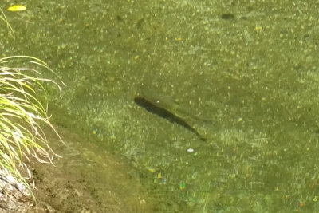
その淵の僕たちが立っている岩場のすぐ下も深いエグレになっており、流木の影に中学生サイズが数匹見られた。谷倉さんが、岡田君の目の前で23cmを釣り上げ、その上の落ち込みの深みを谷倉さんがエサ釣りの強みを活かして探ってみると、滝壺の渦の中から29cmが喰いついた。今日は魚の活性が高いようだ。
高巻きをしてさらに上流へ進み、先頭を行く岡田君が、木陰のある細長い淵の流れ込みに毛針を打ち込み、そのまま浮かせて流してくると、ピシャンッとイワナが頭を出して咥えた。
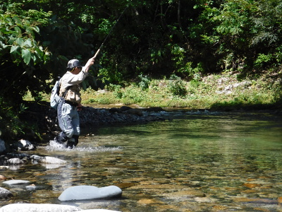
『やったぞ！』
心の中で応援して見ていると、岡田君は慣れぬテンカラの取り込みに苦労しながらも、なんとか今日の１匹目をネットの中へ収めた。
「釣った～！」
岡田君はネットの中の魚体を、うれしそうに何枚もカメラで撮影していた。
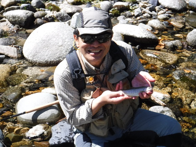
ようし僕も！ということで、撮影中の岡田君をその場に残し、上流へ向かう。流れ込みのカーブを曲がると、ごく浅い、ダラダラとした平瀬が続いていた。
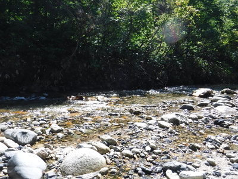
右岸側にチョッとした流れの筋が出来ており、その一番上流にミノーを打ち込み、クィックイッとアクションを付けながら引いてくると、コツンとアタリがあり、ブルブルとロッドに魚の震えが伝わってきた。
「来たっ！」
そんなに大きくはないので強引に引っこ抜くと、フックが外れてイワナがポトリと河原に落ちる。慌ててネットで押さえて捕まえた。記念すべき今日の１匹目である。ああ、ホッとした。今日はもしかしたらボウズを喰らうのでは？と内心不安だったのだ。ゼロと１の間にある虚無の大きな隔たりが埋まり、思わずため息が出る。時刻はちょうど10時半だった。今日のために新調した防水デジカメ、Fuji Film の XP-90 の使い勝手も良く、安心して撮影ができた。これなら転んで水没しても大丈夫である。
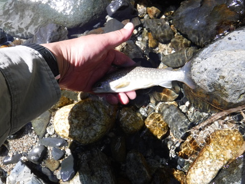
渓流を同時に３人で釣り上がるというのは、釣法が同じ場合、意外と難しいことかもしれない。誰だって先に良いポイントを攻めたがるから。しかし今日の僕たち３人は、エサ、テンカラ、ルアーとそれぞれ特色のある釣り方に分かれていたことと、お互い気心の知れた仲間ということから、入れ違いにポイントを攻める順番を交代しながら効率よく釣り上がっていた。
流れ込みに木陰のある右曲がりの淵が現れた。その流れ込みにミノーを投げ込んで引っ張ると、岩盤に主流がぶつかる辺りで水の飛沫が上がった。
『おっ！ 魚だ！』
ルアーに反応したのだが、喰いつくまでには至らなかったらしい。２度、３度と投げてみるがそれっきり反応は無い。おかしいなぁと思っていると下流から岡田君が追いついてきたので、テンカラでやってみてよと場所を譲り、毛針の行方を目で追う。レベルラインで振り込まれた毛針が、さっきの飛沫のポイントを通過する瞬間、水中から魚が頭を出して咥えた。
「出たっ！」
思わず声を出すと、岡田君の合わせが決まり、長いロッドが曲がる。上がってきたのは26cmほどの太ったイワナだった。毛針の方を好む魚も居るのだ。まぁ、渋い魚に見破られやすいのはルアーの欠点かもしれない。自分の腕は別として。
時刻は11時半近くになり、流心に大岩がどっしり構えている小規模な淵に出くわした。先行していた谷倉さんが、
「ここは伊藤、やってみろ」
と譲ってくれた。右側の岸辺から、青い深みが魅力的なポイントにミノーを振り込もうとすると、
「もう少し、向こう側から」
と、流心近くからキャストするように谷倉さんがアドバイスしてくれた。流れ込みの最上流に得意のドクターミノー赤金を振り込み、リーリングとともにルアーが震えながら大岩の辺りを通過した瞬間、ゴクンと重いアタリ！
『大きい！』
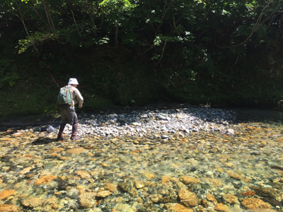
心中で叫びつつ、ファイトを始めると、淵の中で黒い魚体が捻転を始める。ネットですくうよりも、なだらかな左側の岸辺にずり上げた方が確実と瞬時に判断し、やや強引に引き上げる。砂利の上に横たわった魚体は、丸々と太った見事な28cmのイワナだった。
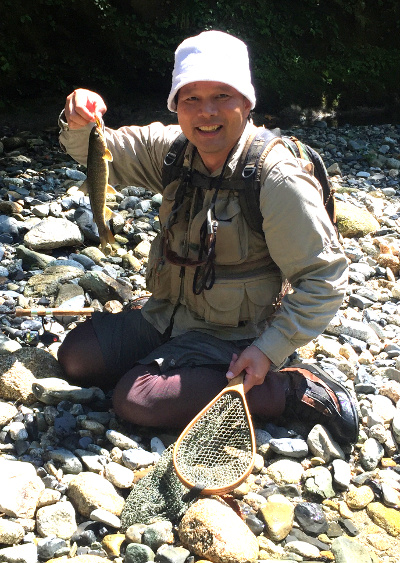
一部始終を谷倉さんが i-Phone で撮影してくれていた。
「ありがとうございました！」
と、感謝の言葉を述べ、追いついた岡田君と３人で魚の写真を撮した。赤金のドクターミノーのボディーに付いたフックをしっかり咥えたイワナは、水たまりで呼吸しながら、じっと横たわっていた。。
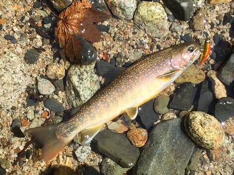
さらに遡行は続く。岡田君のテンカラには、ここぞというポイントで必ず反応がある。しかし、慣れぬテンカラで合わないことも多い。しかし、ほんのちょっとしたポケットをピンポイントで攻めることができるテンカラは独特の強みがある。谷倉さんも、熟練したエサ釣りの技術で、僕たちを先行させてくれていながら、着実にキャッチの数を増やしている。
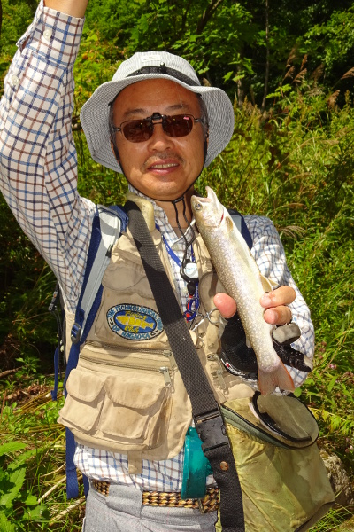
この川の今日の水量は徒渉には問題無い。しかし、丸石を乗り越えたり、滑りやすい岩の上を歩いていくのは、ガタついた足腰にはかなりキツイものがあった。流木が溜まった淵を越えるときに、谷倉さんは左岸側の崖をへずり、僕に竿を預けて上流へと巻いて行く。僕と岡田君は、こりゃ無理だと判断して、右岸側を迂回することにした。深そうに見えた右岸側も、行って見ると意外に浅く、岩盤が斜めに落ち込んでいることを除けば、比較的安全なルートだった。岡田君の新品のウェーディングシューズのラバー底は、よく苔むした岩の表面をグリップしている。僕の古い靴も、まだまだ良く働いてくれた。流木の溜まりを越して、少し藪をかき分け、谷倉さんに追いついた。
広く開けた砂地の長い淵に出た。先頭を行っていた僕は、遠投して流れ込みにミノーを打ち込み、早めにアクションを付けて巻いてくる。深みの真ん中から、青白い魚体が稲妻状に追いかけてきて、僕の足元でルアーを横なぐりにひったくった。
『これも大きい！』
40年近く昔に製造された往年の傑作スピニングリール、ミッチェル409のドラグを鳴らしてイワナが抵抗する。流れの真ん中に立ち込んでいたので、反転する魚体を慎重にいなしてネットですくった。
「やった～！」
今日１番の大物をキャッチし、ネットを大事に水に漬けながら下流へ移動し、２人に見せる。谷倉さんが測ってみると、31cmあった。何十年ぶりの尺物だ。頭の大きな、がっしりとしたイワナだった。時刻は昼１時に近かった。
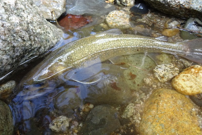
大物を釣ったので、足腰の疲れも気にならない。さらに遡行し、右岸側に流れ込む深みにルアーを投げる。第２投、第３投、もう出ないかなと思ったが、念のためにもう１回投げた。鋭いアタリがあり、またしてもドラグを鳴らしながらイワナが捻転する。学生時代に研究室隣の木工作業室で作った年代物のランディングネットですくうと、28cmの良型だった。いい写真が撮れた。
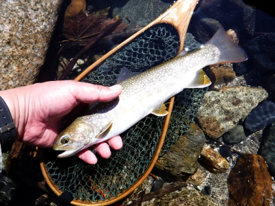
時刻は午後１時半を回り、遅まきながら昼食にしようということになった。河原に重いデイパックを降ろすと、羽が生えたように身が軽くなった。汗をかいた背中が涼しい。すると谷倉さんが突然、
「あっ！魚籠が無い！」
と声を出した。どうやらさっき獲物をさばいた場所に忘れてきてしまったようだ。
「今から取ってくる」
と言い残して、谷倉さんはスタスタと渓を降りて行った。帰りを待つ間に岡田君が小型ガスコンロを出して湯を沸かし、コーヒーを淹れる支度を始めた。水は近くの沢から汲んできた。しばらくすると谷倉さんが重たくなった魚籠を持って帰ってきた。魚籠の中には釣り上げたイワナと笹の葉、そして叩くだけで氷点下！ロッテの「ヒヤロン」という保冷剤が入っており、かなりの重さだった。３人はお弁当を広げ、遅い昼食を楽しんだ。荒沢ヒュッテのおかみさん手作りのおにぎりが２つ、あっという間に胃袋に落ちて行き、お腹は満たされた。湯が沸き、フィルターでドリップした本格的なコーヒーが出来た。カップを渡してもらって飲むと、香ばしい薫りが口に入ってきた。
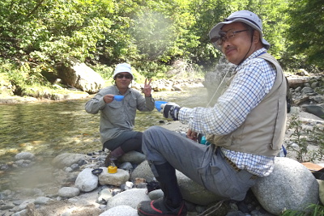
「お！ これを忘れていたぞ」
谷倉さんが嬉しそうな笑顔でリュックから取り出したのは、ウィスキーの小瓶とステンレス製のショットグラスである。ラベルには「響17年」とある。器を手に取り、おそるおそる注いでもらって一口飲むと、ストレートの強い刺激が喉から食道に降りて行き、思わずむせそうになった。ウィスキーを飲むなんて、何年ぶりだろう。蒼い空、白い雲、緑の山々、澄んだ流れ、渓の音、無垢なイワナ、懐かしい釣友・先輩。別天地の幸せがそこにあった。
さらに歩みを進めると、渓谷はだんだん狭く、薄暗くなり、廊下の様相を呈してきた。細長い淵の上流に向けてルアーを投げ、横引きのアクションを付けて引いてくると、リリースサイズのイワナが10mも追いかけたあげく、スレで掛かった。大事にフックを外し、水に戻してやる。この頃３人はほぼいっしょに釣り上がっており、谷倉先輩の号令で、
「ほれっ！最初はテンカラ!」
反応が無いと
「次はルアー！」
そして最後は名人のエサ釣り、という具合にチームプレイで１つのポイントを攻めていった。１つのポイントの次に、谷のカーブを曲がるとまた別のポイントが回り舞台のように現れる。思うに渓流釣りの楽しさは、この景色とポイントが次々に変わりながら現れることにあるのではないだろうか？
しばらく行くと、小さな沢が左岸側から出ていた。その流れ込みの溜まりをふと覗いた谷倉さんが突然大きな声を上げた。
「伊藤！ タモ持ってこい！ 早く！」
びっくりしてネットを外して手渡すと、先輩は自分のタモを足元の上流側に保持しながら僕のネットを静かに下流から寄せていく。よく見ると、良型のイワナが２つのネットに挟まれてじっとしている。
「やったぞぉ！」
挟み撃ちにあったイワナが谷倉さんのタモの中で暴れている。
「谷倉さん、やりましたねぇ！」
僕と岡田君は、谷倉先輩の執念に心から感服して、じっと網の中のイワナを見つめた。
時刻は２時半を回り、岡田君はさらにいくつか良型をキャッチした。僕はスレが１匹だった。かなり川幅が狭くなっており、３人は幾度も川を渡りながら遡行を続けた。すると、巨大な岩に囲まれ、深い緑色をした滝壺の大淵が現れた。僕と岡田君が見ていると、谷倉さんは手前の急な岩盤を、新品の渓流足袋の助けを借りてまるで猿のようによじ登り、大淵に糸を垂らした。こういうポイントでじっくり深場を攻めることができるのは、エサ釣りの強みである。
僕たちは写真を撮ったりしながらしばらく名人の技を眺めていたが、どうも反応は無く、ここから上流へは、かなりの高巻きをしないと通せないようであった。この川を知り尽くした谷倉さんの意見で、さっきイワナを拾った沢から林道に出ることにして、一同は下流へと引き返した。その帰り道の谷倉さんの歩みの早いこと早いこと、とても２月に大病を患った人には見えない。ぼくはつくづく感心した。
藪に囲まれ薄暗く苔むした小沢を、足を滑らせないように気を付けながら遡り、コルゲートパイプを抜けて草むらを掻き上がるとすぐに林道だった。時刻は３時半。谷倉さんはさらに上流の、坂田先輩が、あそこが良いとメールに書いていたポイントに行きたいと言ったが、帰りの行程もあることだし、今日はこれで引き返しましょうという岡田君の意見で、本日の釣りは終了となった。（帰宅してから地図で計測すると、この日の遡行距離は約1.5kmであった。）
再び３人の林道歩きが始まった。飲食したポカリスエット４本と２食分の弁当の分だけは軽くなった僕のデイパックも、疲労した体にはずしりと重い。２人に遅れないように懸命に歩いてついてゆくと、ようやく入渓点の沢に着いた。谷倉さんは繁みから自転車を取り出し、長いロッドをリュックに差してからまたがった。いよいよ長距離を苦労して押してきた折りたたみ式「電動」自転車の真価が発揮される場面となった。ところが後輪の空気圧が不足しており、そのままではパンクが懸念された。すると谷倉さんはリュックから携帯用の空気入れを取り出し、タイヤにエアーを入れ始めた。
「あれぇ？ おかしいなぁ？」
どうやらバルブの形状と空気入れの口の形状が合わないらしい。あれこれ試してみて、さらには岡田君がやってみたのだが、全然合わない。
「こりゃ、ダメですねぇ...」
岡田君もとうとうさじを投げた。しかたがないのでそのままペッタンコの後輪で走っていくことにし、谷倉さんは僕たちをあとに、快適にこぎ出した。下りなので、舗装されていれば何もしなくても進んで行く。いやあ、さすがは文明の利器、自転車は速い！
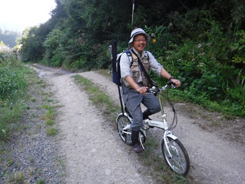
一方、僕と岡田君は、地道にひたすら林道を歩く。いくつもの谷のカーブを越え、水が流れ落ちている沢を渡り、大学時代の思い出話をしながらてくてくと歩く。
「やっぱり下りは早いなぁ！ こりゃ思ったより早く着くぞ」
岡田君はそう言うが、僕にとっては下り坂の方が「膝に来る」のでつらいのだった。
４時50分頃、懸命に歩いた２人は、沢の落ち口でイワナをさばいていた谷倉さんに追いついた。ちょっと休憩しようということになり、デイパックを降ろして一休みした。非常食のチョコレートを出して３人でつまむ。甘い１粒が、体の隅々にまで沁み込んでいく。ぼくはチョコをまたたくまに５粒ほどむさぼり食べてから、岡田君とともにアスファルトの路面に寝転んだ。今度は疲労困憊した体が溶けて林道の表面に吸い込まれるような感覚があった。
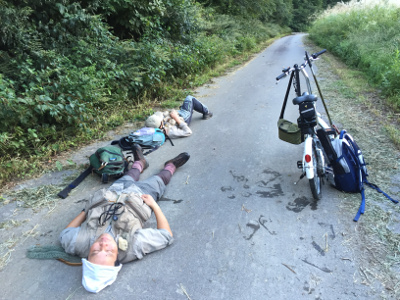
15分ほど休んだだろうか？ 谷倉さんの号令で２人は重い体を起こし、再び歩き始めた。車に着いたら自転車をたたんで帰り支度をしているからなと言い残し、谷倉さんは先に走り去った。
『誰か親切な人が、車で通りかからないかなぁ.....』
と、虫のいい考えが頭をよぎる。朝と違って、中に水が入ったネオプレンソックスと濡れたウェーディングシューズが実に重く感じられる。１歩、また１歩と、自分で歩まなくては少しも前に進まない。舗装された路面では体重＋ベスト＋デイパックの重みがもろに膝に掛かるし、荒れた砂利道ではちょっとした石ころの段差が足首を痛めつけようと狙ってくる。さらに、急な下り坂ではつま先が圧迫されて痛み出す。本当にきつい。カーブを曲がると、また次の谷が向こうに見える。いったいいつになったら車まで行き着くのだろうか.....。
僕はしだいに岡田君から遅れ始め、いつしか彼の姿は林道のカーブの向こうに消えてしまった。孤独な歩みが続く。今日の川に行くと決まった時点で、一抹の不安はあったのだが、これほど歩けないとは思わなかった。こんなことならもっと日頃のウォーキングに励んでおくべきだったなぁと、文字通りの「後悔先に立たず」である。
時刻は６時を回った。渓の周辺には、しだいに夕暮れの気配が立ちこめてきた。まだ林道のゲートは見えない。立ったまま、ほんの少しだけ休む。腰を下ろしたらもう立ち上がれないような気がするのだ。白いタオルハットで滴る汗を拭い、膝に手を当て、肩で息をつき、重いデイパックを担ぎ直す。背中は汗でびっしょりだ。コンクリート舗装された急な下り勾配を、つま先の痛みに耐えながらゆっくりと下って行く。背中の熊避け鈴が、チロリンチンチロリンとままならぬ歩みに合わせて鳴る。その音に励まされて、次の一歩を懸命に出す。
『これで目の前に黒い生き物が現れたら最悪だなぁ.....』
熊への恐怖も、あまりのしんどさに、もうどうでもいいように思えた。
午後６時15分、カーブを曲がると、ゲートの向こうに白い車が見えた。
『ああ！ ようやく着いた！』
叫び出す気力も、走り出す体力も残っておらず、亀のような歩きで、ようやく待っていた２人に追いついた。今日の長い釣行のゴールである。
「谷倉先輩、足を引っ張ってしまって済みません...」
それだけ言って、ロッドとデイパックをトランクに入れ、汗に濡れたベストを脱いだ。汗まみれの僕たちを気づかって、谷倉さんがバスタオルを引いてくれた後部座席にどっかと座り込み、車が動き出した。
『これで帰れる....』
急なカーブが続く国道を、慣れた手つきで谷倉さんが車を走らせる。右に左に揺られながら、僕は心の底から安堵のため息をついた。
再びシルバーラインを登り、遊覧船の船着き場に着いたときにはもうあたりは真っ暗だった。駐車場には、トローリング組の山口先輩、徳田先輩、宮田先輩、中島先輩の４人が乗っていった、岡田君の車がまだ停めてあった。４人はまだ帰ってきていないのだ。谷倉さんと岡田君は、４人を迎えにコンクリート舗装された船着き場への道を歩いて降りて行った。僕はとてもそんな元気はなく、車の中で疲れ果てて座っていた。
しばらくすると、岡田君の代わりに宮田先輩が車に乗り込んで来た。
「伊藤！ 大丈夫かぁ？」
宮田さんの問いかけに力無く返事をする。聞けば、宮田さんは今日、岬に立ち込んでのキャスティングで、なんと47cmの大物イワナを釣り上げたとのこと。すごい武勇伝を聞こうと思っているうちに荒沢ヒュッテに車は着いてしまった。これでようやく風呂に入れると安心し、荷物をロッジに入れ、さっそく本館に向かった。風呂に入ると足の指はみな、黒く内出血していた。ウェーディングシューズのつま先で圧迫され続けていたためらしい。頭と体を洗って風呂から出ると、ようやく人心地が戻ってきた。
浴衣を着て食堂に入ると、今日長岡市から駆けつけた、当時の釣り同好会顧問であった丸山先生と、坂田先輩が見えていた。お二方は、来る途中の秘密のポイントで、大物のサクラマス、ニジマス、リリースサイズのヤマメ多数を釣り上げたとのこと。
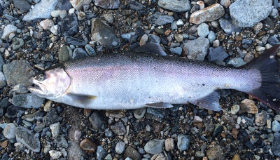
さらに坂田さんは、自分の古いアルバムからめぼしい写真を抜き出して、Ａ４カラー８ページにわたる小冊子を作ってきてくださった。ページをめくると、ほぼ30年前の釣り同好会の面々が次々に現れて、とても懐かしい気持ちで心が一杯になった。そうこうしているうちに皆が風呂を済ませて食堂に集まり、いよいよ大宴会となった。堅苦しい挨拶もなく、いきなり生ビールで乾杯である。口に含んだビールが喉を滑り落ちていくと、全身の血管が沸き立つような快感に襲われた。
「あ～！ うまいっ！」
思わず言葉が出てしまう。今日の往復５時間以上の林道歩きがすべて報われた気分であった。
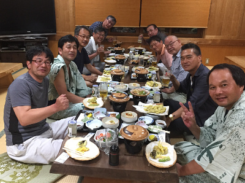
今日の宴会のお料理は、岩鱒（ロックトラウト、ニジマスとイワナの交配種）のお刺身、冷や奴、ゼンマイの煮付け、ナスと山菜の天ぷら、煮魚、椎茸と肉のホイル焼き、お漬け物、そして何と言っても、坂田さんが三面川から釣ってきた天然鮎の塩焼きと、トローリング組が合間に釣ったワカサギの天ぷらである。坂田さんの話では、魚野川よりも三面川の方が水質がきれいなので、アユの味も優れているとのこと。確かに昨日のアユよりも美味しく感じられた。また、ワカサギはちょうど食べ頃のサイズで、ちょっと塩を付けて頬張ると、かりっと揚げられた食感が何とも言えなかった。今日は約100匹ほど釣れたそうだ。一同は次々とビールのジョッキを空にしつつ、昔話に花を咲かせ、美味しい料理に舌鼓を打った。そのうちに日本酒も出てきた。
メンバーの中には、卒業以来、30数年ぶりに再会した方も見えて、思い出話の種は尽きなかった。すると、調理場からおかみさんが本日のメインディッシュの大皿を両手で抱えて入って来た。宮田さんの大イワナ、47cmの塩焼きである。どんな大型の調理器具で塩焼きにしたのかはわからなかったが、とても上手に焼き上がっていた。
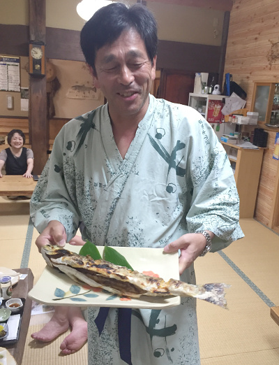
宮田さんは満面の笑みで記念写真を撮してもらい、大勢のデジカメやスマホのシャッター音が鳴り響いた。続いて一同は、口々に、
「こんなでかいイワナの塩焼き、見たことがない！」
と褒め称えながら、箸を伸ばした。僕も一口いただいたが、とても香ばしく焼けており、ビールによく合った。
時刻は夜９時半を回り、テーブルの上、所狭しと並んだ料理を平らげ、御飯と味噌汁をいただいて、ヒュッテ食堂での宴会はお開きとなった。一同はいっぱいに満たされたお腹をさすりながらロッジに引き上げた。
ロッジはログハウス造りであり、豪雪地帯に建てられているため、１階部分はほとんどコンクリートの基礎である。階段を上がり、２階に近い高さの玄関を入ると居間があり、冷蔵庫、テレビ、トイレ、ファンヒーターが完備されている。浴衣、バスタオル、タオル掛けもある。その奥には６人が眠れる寝室。階段を上がると４人分の寝室があった。一同は居間のテーブルを囲み、持ち込んだワイン、焼酎、日本酒、ブランデーなどで二次会が始まった。
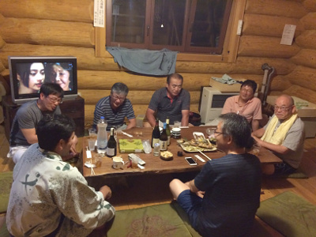
宮田さんの大イワナは一次会では食べきれなかったので、食堂から持ってきて再びテーブルに載った。実によく気が付く幹事の岡田君が持ってきた氷をグラスに分けて、めいめい好きなアルコールを注いで再び乾杯となった。僕は服薬の関係上、本来はアルコール禁止なので、二次会では炭酸水のオンザロックを楽しんだ。そしてとなりに座っている宮田さんに、あの大イワナを釣り上げるときに、何分くらいファイトしたのかを尋ねた。
「いやぁ、１分もかからなかったんじゃあないかなぁ？」
詳しく聞くと、最初はウグイが１匹スプーンにヒットしたそうだ。その後、ヒュッテの御主人に言われたとおりに、件のスプーンをキャストしてから底まで沈め、横にロッドをしゃくってアクションを付けて引いてくると重いアタリが！
『こりゃコイかなぁ...』
と半信半疑で寄せてくると、黒い魚体は間違いなくイワナ！しかも大きい！途端に緊張したが、タモもあったので冷静にやりとりして首尾良くランディングしたそうだ。
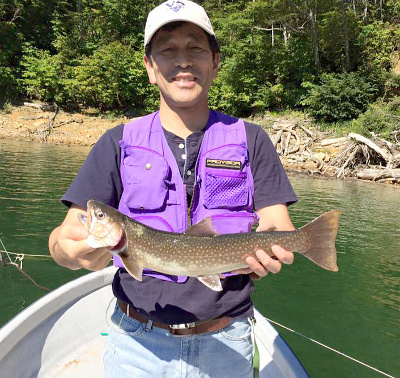
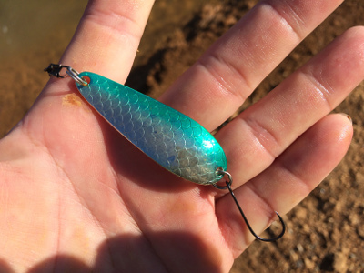
谷倉さんも、前夜に急遽修理した自分のロッドとリールで大物が釣り上げられたので、とても嬉しそうだった。
６期生の僕と岡田君が入学して釣り同好会に入り、坂田さんや宮田さんたちと奥只見に足繁く通うようになった時には、１期生の谷倉さん、山口さんはすでに卒業されており、伝説のＯＢであった。しかし谷倉さんは毎年ゴールデンウィークや盆休みには必ず帰ってきて、在校生と共に荒沢ヒュッテやキャンプ泊で釣行を楽しんでいた。いつの釣行でも必ず一番大きな魚を釣ることで有名な谷倉さんであった。今日初めて伺ったのだが、その谷倉さんを渓流釣りに引き込んだのが山口さんだったそうだ。山口さんは福島の出身で、実家の近くには良い渓流の釣り場がたくさんあるとのことだった。今日はトローリングの合間に、たくさんワカサギを釣り上げた山口さんであった。
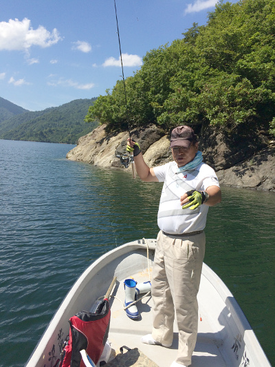
ロッジの酒宴は続き、夜も更けてきた。徹夜組の徳田さん、山口さんは昨日と今日の疲れがどっと出て、丸太の壁にもたれてうたた寝を始めた。残りのメンバーはさらに杯を重ね、思い出話が尽きない。貧しかった学生時代に坂田さんが車両価格３万円で買った緑色のサニーで通ったシルバーライン。そのトンネルの中で先行車を追い抜いたこと。雪の山中で謎のケモノのうめき声に追いかけられて恐怖の余り逃げ帰った釣行のこと。この夜、みな歳相応に風貌は変わったが、心は学生時代に還って歓談は夜更けまで続いた。疲れ果てた僕は途中でリタイアして、薬を飲んで床に入り、朽ちて横たわった丸太のように眠った。
フィッシュウォッチング
翌朝は７時に起きた。皆で朝風呂を楽しもうということになり、「白銀の湯」の通用門の鍵をヒュッテのおかみさんから借りてきた。スリッパでぶらぶら歩いて温泉に向かい、裏のドアを鍵で開けて入る。坂田さんが着替えを忘れてロッジに取りに戻ったので、僕は鍵を持って帰りを待った。今日も天気は快晴。遠くの山並みの緑が陽光に輝いて美しい。もう少ししたら、辺りは紅葉に覆われることだろう。その次は雪深い冬である。
坂田さんがプリウスに乗って戻ってきた。いっしょに温泉の２階に上がり、皆に合流して浴槽に入る。昨日の疲れがどっと出てくる。夜の露天風呂も風情があったが、早朝もまた、心地が良い。極楽だ。
さっぱりして風呂から出ると、坂田さんが、
「ちょっと魚を見に行こうか」
と言って、車を走らせた。国道352号線の橋のそばに車を停め、しばらく小径を降りると北ノ岐川の水面が見下ろせた。
「ほら、あそこ」
坂田さんが指さす方を見ると、足元の深みに魚影が見える。40cmくらいはありそうだった。ヒレの先端が白くないのでどうやらサクラマスのようだった。
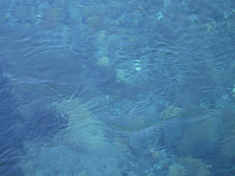
この北ノ岐川は、銀山湖の魚族の種川として、石抱橋から上流は永年禁漁区となっており、イワナやサクラマス、ヤマメの楽園となっているのだ。1981年に永年禁漁区として制定されるまでには、開高健氏、常見忠氏、秋月岩魚氏、釣り宿の御主人方、常連の釣り人たち、地元の人々から構成された「奥只見の魚を育てる会」の熱心な取り組みがあったと聞く。さらに永年禁漁が定められた後も、密漁者との長く厳しい闘いが続いたそうだ。僕たちが学生時代には、長岡技術科学大学の釣り同好会は、魚を育てる会の団体会員になっており、秋のフィッシュウォッチングには皆で参加し、宮の淵に集まった大物イワナやサクラマスを見学したり、支流の沢へのイワナの稚魚放流などのボランティア活動をしたものである。
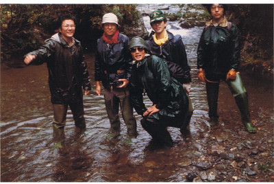
あれから30数年、開高さんの名句ではないが、「橋の下をたくさんの水が流れた」のである。静かに定位するサクラマスを見ながら、僕はしばし岸辺に立ち尽くし、感慨にふけった。伝説的な銀山湖の大物たちは、今も健在であった。
ちょっとしたフィッシュウォッチングを終えて宿へ戻ると、食堂に朝食が待っていた。明るい日差しの中、美味しい食事を楽しむ。ニジマスの甘露煮、ししとうの和え物、サラダ、目玉焼き、キュウリとニンジンのお漬け物、御飯、味噌汁。そして、二次会でも食べきれなかった宮田さんの大イワナは、レンジで温め直して、みたび食卓に上り、とうとう完食されていた。食後に出されたコーヒーがとても美味しかった。
朝食を頂いた一同は、荒沢ヒュッテの玄関前で、御主人に記念写真を撮していただいた。
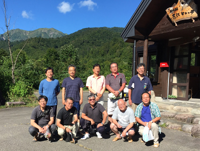
撮影の後、僕はもう一度ヒュッテのロビーに戻り、お土産に「イワナの甘露煮」３尾入りを３箱購入した。（帰宅して頂いたが、この甘露煮は絶品だった） そしてロッジに行き、雑然と広がってしまった釣り具など荷物をまとめた。ロッジのテーブルには昨夜の２次会で空けられた酒瓶やグラスがあり、それらを手分けして片付けた。まだ残っていたお酒は、皆で分けて持ち帰ることにした。忘れ物の無いように気を付けて荷物を運び出し、紀さんの車に積んだ。他のメンバーも帰り支度が整い、めいめい車に乗り込んだ。楽しかったＯＢ会も、いよいよお別れの時が来た。再会を誓って言葉を交わし、３台の車は走り出した。
この後、紀さんと僕はまっすぐ帰ってきてしまったのだが、後で聞くところによると、谷倉号・岡田号は「河は眠らない」という開高健氏の有名な言葉が刻まれた石碑に立ち寄り、記念撮影をしたそうだ。
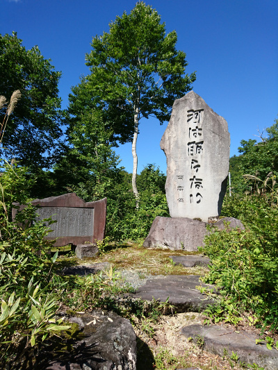
さらに驚くべきことには、谷倉さんは、前日坂田さんが好釣果を挙げた例のポイントに立ち寄り、執念の粘りで40cm級のニジマスを釣り上げたとのこと。なかなか寄って来ない大物を相手に、ランディングは宮田さんが素足で水に入り、タモですくったそうだ。今回のＯＢ会釣行では、大学時代から知ってはいたものの、谷倉さんの根性というか、転んでもただでは起きない気質には、あらためて本当に感心させられた。
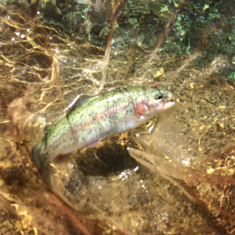
帰途、僕は紀さんの車の中で、シートを倒して楽な姿勢を取り、全身の筋肉痛に耐えながらうつらうつらとうたた寝を続けていた。結局帰りの道中も、ずっと紀さんが１人で運転してくれた。高速道路を幾つも乗り継ぎ、豊橋の自宅に到着したのは午後３時を回っていた。重い荷物を部屋に運び込み、バタリとベッドに寝転んだ。
夢のような２泊３日のＯＢ会釣行が終わった。次回はいつになるだろう？とても楽しみである。
釣行日誌 故郷編 目次へ
サイトマップ
ホームへ